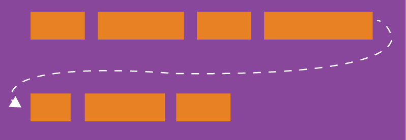
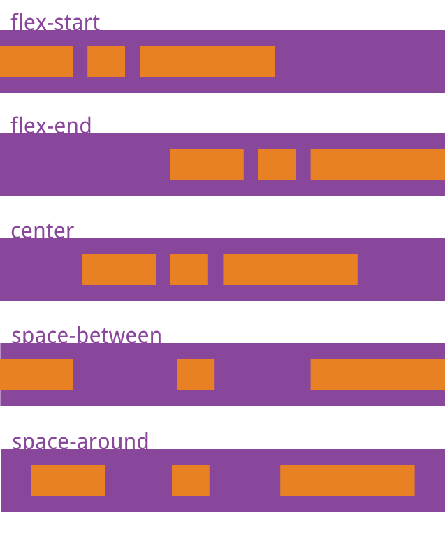
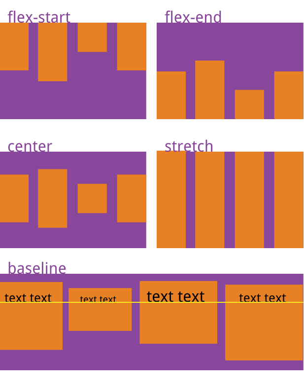
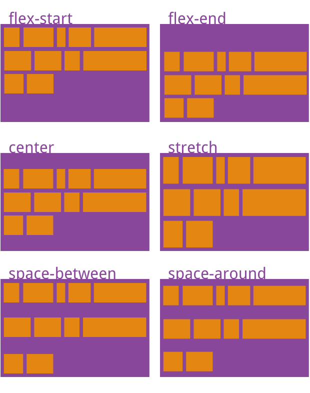
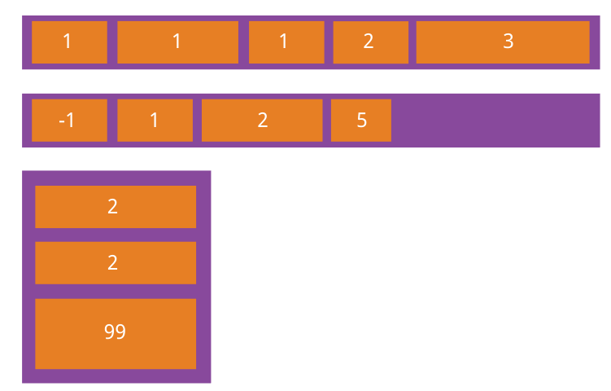
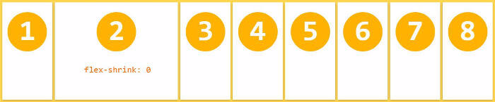
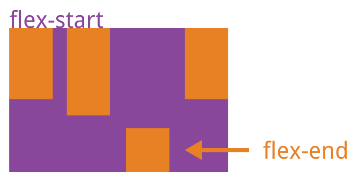

flex-direction属性决定主轴的方向（即项目的排列方向）。
.box {flex-direction: row | row-reverse | column | column-reverse;}
_files/0.33368050772696733.png)
它可能有4个值。
row（默认值）：主轴为水平方向，起点在左端。row-reverse：主轴为水平方向，起点在右端。column：主轴为垂直方向，起点在上沿。column-reverse：主轴为垂直方向，起点在下沿。
3.2 flex-wrap属性
默认情况下，项目都排在一条线（又称"轴线"）上。flex-wrap属性定义，如果一条轴线排不下，如何换行。

.box{flex-wrap: nowrap | wrap | wrap-reverse;}
它可能取三个值。
（1）nowrap（默认）：不换行。
_files/0.22318424051627517.png)
（2）wrap：换行，第一行在上方。
_files/0.9839301677420735.png)
（3）wrap-reverse：换行，第一行在下方。
_files/0.08916587033309042.png)
3.3 flex-flow
flex-flow属性是flex-direction属性和flex-wrap属性的简写形式，默认值为row nowrap。
.box {flex-flow: <flex-direction> || <flex-wrap>;}
3.4 justify-content属性
justify-content属性定义了项目在主轴上的对齐方式。
.box {justify-content: flex-start | flex-end | center | space-between | space-around;}

它可能取5个值，具体对齐方式与轴的方向有关。下面假设主轴为从左到右。
flex-start（默认值）：左对齐flex-end：右对齐center： 居中space-between：两端对齐，项目之间的间隔都相等。space-around：每个项目两侧的间隔相等。所以，项目之间的间隔比项目与边框的间隔大一倍。
3.5 align-items属性
align-items属性定义项目在交叉轴上如何对齐。
.box {align-items: flex-start | flex-end | center | baseline | stretch;}

它可能取5个值。具体的对齐方式与交叉轴的方向有关，下面假设交叉轴从上到下。
flex-start：交叉轴的起点对齐。flex-end：交叉轴的终点对齐。center：交叉轴的中点对齐。baseline: 项目的第一行文字的基线对齐。stretch（默认值）：如果项目未设置高度或设为auto，将占满整个容器的高度。
3.6 align-content属性
align-content属性定义了多根轴线的对齐方式。如果项目只有一根轴线，该属性不起作用。
.box {align-content: flex-start | flex-end | center | space-between | space-around | stretch;}

该属性可能取6个值。
flex-start：与交叉轴的起点对齐。flex-end：与交叉轴的终点对齐。center：与交叉轴的中点对齐。space-between：与交叉轴两端对齐，轴线之间的间隔平均分布。space-around：每根轴线两侧的间隔都相等。所以，轴线之间的间隔比轴线与边框的间隔大一倍。stretch（默认值）：轴线占满整个交叉轴。
四、项目的属性
以下6个属性设置在项目上。
orderflex-growflex-shrinkflex-basisflexalign-self
4.1 order属性
order属性定义项目的排列顺序。数值越小，排列越靠前，默认为0。
.item {order: <integer>;}

4.2 flex-grow属性
flex-grow属性定义项目的放大比例，默认为0，即如果存在剩余空间，也不放大。
.item {flex-grow: <number>; /* default 0 */}
_files/0.35167325171642005.png)
如果所有项目的flex-grow属性都为1，则它们将等分剩余空间（如果有的话）。如果一个项目的flex-grow属性为2，其他项目都为1，则前者占据的剩余空间将比其他项多一倍。
4.3 flex-shrink属性
flex-shrink属性定义了项目的缩小比例，默认为1，即如果空间不足，该项目将缩小。
.item {flex-shrink: <number>; /* default 1 */}

如果所有项目的flex-shrink属性都为1，当空间不足时，都将等比例缩小。如果一个项目的flex-shrink属性为0，其他项目都为1，则空间不足时，前者不缩小。
负值对该属性无效。
4.4 flex-basis属性
flex-basis属性定义了在分配多余空间之前，项目占据的主轴空间（main size）。浏览器根据这个属性，计算主轴是否有多余空间。它的默认值为auto，即项目的本来大小。
.item {flex-basis: <length> | auto; /* default auto */}
它可以设为跟width或height属性一样的值（比如350px），则项目将占据固定空间。
4.5 flex属性
flex属性是flex-grow, flex-shrink 和 flex-basis的简写，默认值为0 1 auto。后两个属性可选。
.item {flex: none | [ <'flex-grow'> <'flex-shrink'>? || <'flex-basis'> ] }
该属性有两个快捷值：auto (1 1 auto) 和 none (0 0 auto)。
建议优先使用这个属性，而不是单独写三个分离的属性，因为浏览器会推算相关值。
4.6 align-self属性
align-self属性允许单个项目有与其他项目不一样的对齐方式，可覆盖align-items属性。默认值为auto，表示继承父元素的align-items属性，如果没有父元素，则等同于stretch。
.item {align-self: auto | flex-start | flex-end | center | baseline | stretch;}

该属性可能取6个值，除了auto，其他都与align-items属性完全一致。